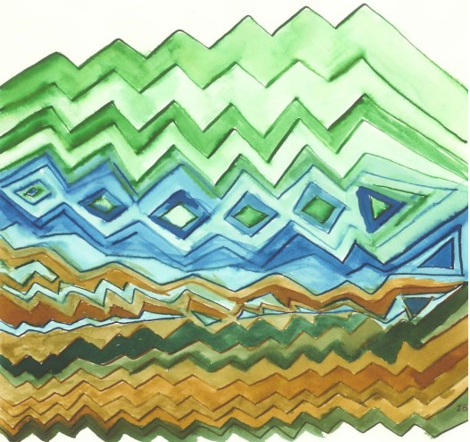
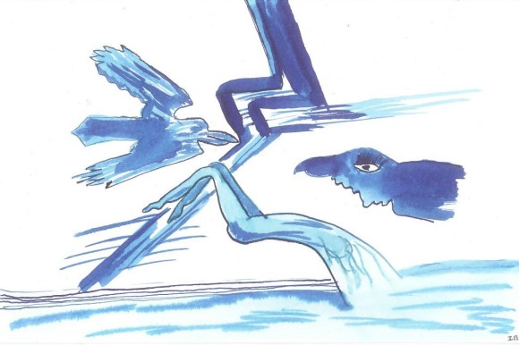
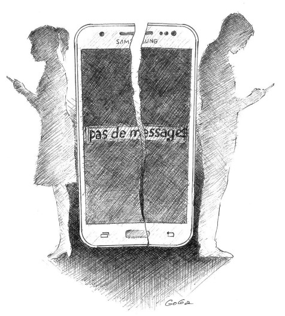
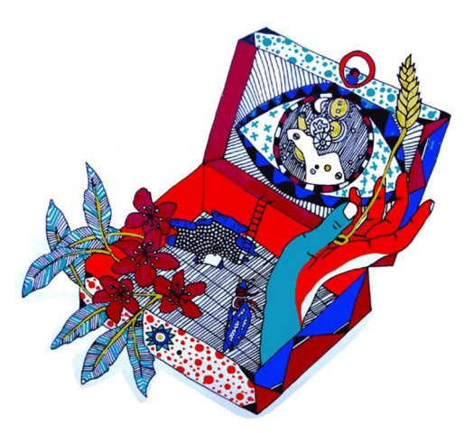

★
Ermitage
Quand l’orage gronde, que les éclairs fusent, je rentre en toi me réfugier.
Je ferme les écoutilles, les rimes qui m’abritent me délivrent du dehors. Je t’habite.
En toi je nais, je meurs, je renais.
Tu es mes deux novembre, mes premiers avril.
A
À deux doigts de...
Charmée, tous mes sens en alerte, je me promène dans mon éden. La nature s’offre à moi et je la prends comme une amante sa maitresse, tout en surprise, tout en délicatesse. Je respire, j’étreins, je caresse. Je frôle les lavandes, excite le romarin, me parfume de leurs fragrances. Curieuse, j’écarte le feuillage pour mieux découvrir la courge vagabonde qui termine sa course blottie au cœur du weigelia.
Au pied, les belles musquées de Provence me font saliver et en attendant de les goûter, je croque dans une grosse tomate rouge toute chaude de soleil. Les papilles calmées, je m’en vais explorer le petit coin de jardin réservé aux herbes aromatiques. Petit coin de jungle, chaque plante se dispute la place à sa voisine. Je plonge tête baissée, j’hume ce bouquet garni. Je dois m’arrêter, je vais exploser. Mes sens saturés par tant de senteurs demandent quelques minutes de pause.
Je me relève et contemple ce tableau, ce lieu offert aux mille abeilles qui viennent butiner en liberté.
Je triche un peu, quitte mon terrain, pour par-dessus la clôture, m’enivrer de l’odeur du figuier voisin. À maturité, presque molles, les 89 figues attendent qu’un palais fin, qu’une main gourmande, vienne les décrocher. Telle une voleuse, je m’empresse d’en cueillir une, je la dévore. La trace qu’elle laisse sur le fond de ma gorge fait durer mon plaisir. À deux doigts de jouir.
Je respire profondément et reprends ma quête de sensations.
C’est la terre qui m’attire, toujours je la cajole, et mes vieilles oreilles sourdes entendent ses soupirs de bien-être. Avec elle, c’est le firmament, le bouquet final, l’extase. Je suis au zénith.
Je rentre chez moi, rassasiée.
Je peux aller me coucher
L’odeur nauséabonde du gas-oil me réveille,
Des pigeons morts hantent mes nuits sans sommeil.
Je me rappelle, ça me revient, je me rappelle.
La plage, des fourmis noires, du sable chaud,
Château en Espagne englouti dans les flots,
Trop de confiance en son rafiot.
Une mer foncée, des cris, des battements d’ailes,
Dans l’eau glacée des bras appellent,
Ni christ, ni sauveur, l’océan pour seul linceul.
L’outrecuidance, la morgue, les coulonneux,
Tout s’entrechoque, tout s’entremêle,
Des pigeons morts hantent mes nuits sans sommeil.
Altérité
J’ai cherché à croiser ton regard,
J’ai cherché à t’offrir un sourire.
Tu as eu peur de sourire,
Tu as regardé nulle part.
Tu ne m’as pas reconnue,
Tu ne t’es pas reconnu.
Tu es un autre moi,
Je suis un autre toi.
J’ai insisté,
J’ai insisté en vain.
Mon sourire s’est perdu,
Tu n’as pas su.
Par d’autres chemins,
Je m’en suis allée,
Vers d’autres moi-même,
Vers d’autres toi-même.
À la recherche d’un sourire osé.
Alternative

Boule au ventre,
Mâchoire qui tremble.
Respiration paralysée,
Pensées annihilées.
Subir, agir
Agir, subir.
Se gaver d’anxiolytiques,
Devenir alcoolique.
Déchoir, décevoir.
Passer du bleu au noir.
Choisir un mode alternatif.
Accueillir l’émotion,
Vivre la sensation.
Un chemin entrouvert,
Passer du bleu au vert.
Au Pays des If
Un escargot et une tortue
S’en allaient de par les rues.
Ils avaient pour objectif
D’observer le pays des If.
« Hue, hue. » criait la tortue
À son compagnon l’escargot,
Qui en eut vite plein le dos.
« Je suis tout vermoulu
Je n’en peux plus.
Si tu continues,
Je m’en vais voyager
Avec ma cousine la limace
Qui, elle, ne fait pas la grimace. »
« Nenni, nenni, pas de limace
Monte sur ma carapace. »
Lui répondit la tortue
Toute confondue.
Et c’est ce drôle d’attelage
Qu’un vieux singe sage
Vit passer à la barrière de péage.
Il se dit : « Miséricordieux,
Voilà un étrange covoiturage,
Qui n’est pas fait pour les sauvages. »
Il écouta leur curieux babillage,
Comprit le but de leur voyage.
« Si », se dit-il « J’accompagnais ces deux compères,
Dans leur surprenante croisière ? »
Au pays des If,
Rien n’est indicatif,
Tout est conditionnel,
Ce qui ne manque pas de sel.
Et c’est à condition, que le singe partageât leurs fadaises,
Que Dame tortue et Sieur escargot
Filèrent en trio,
Au pays des hypothèses,
Où ils devinrent tous trois obèses.
B
Bras dessus bras dessous
…En ville,
Un homme, une femme, se sourient.
Ils avancent bras dessus bras dessous...
Te souviens-tu du temps
Où nous aussi,
Bras dessus bras dessous,
Par les villes, nous partions
Faire les fous ?
Les trottoirs, les boutiques,
Les champs de foire folkloriques,
Les barbes à papa, la musique,
Tout, tout était pour nous.
Je riais, tu riais.
A cette époque-là,
Je t’aimais, tu m’aimais.
Que s'est-il passé entre nous ?
Plus de bras dessus,
Plus de bras dessous,
Plus de rires éclatés.
Fini les baisers,
Fini les boutiques,
Plus de foire ni musique.
Les rosseries, les bouderies,
Les haines, les jalousies,
Les colères, les orages,
Toutes ces rages,
Notre amour ont trahi.
Pourrions
-nous remonter le courant,
Pourrions
-nous rattraper le temps,
Retrouver la saison bénie,
De l'amour qui sourit,
De la drôlerie qui unit?
…En ville,
Un homme, une femme,
Bras dessus bras dessous…
L’espace d'un sourire connivent,
Te rappellent à mon bras.
Ce temps léger,
Ne reviendra jamais.
C
Captivité
J’avais treize ans, le premier coup.
Sous ton charme, j’ai succombé,
Nous nous sommes tout de suite attachés.
À chacun de nos rendez-vous, c’était fou,
Avec toi, la vie était enfin chou.
Et puis que s’est-il passé entre nous,
Plus je te voyais, plus c’était long avant de nous amuser.
On riait bien, encore de temps en temps,
Mais ce n’était plus comme avant.
Nos rencontres sentaient l’orage,
Quand survenait une tourmente, je perdais courage.
Pourtant, partout, toujours, je te cherchais,
Je recherchais le temps de nos folles épopées.
Plus je te voulais, plus un vent froid soufflait.
Je pleurais. Dans mes oreilles résonnait :
« Ce n’est pas ton ami, c’est un félon, il aura ta peau ».
Aujourd’hui, moi, je t’ai dans la peau,
Je peux te dire que je suis dans le ruisseau.
Je suis tombée en esclavage,
Tu n’étais qu’un mirage.
Quand je t’ai démasqué, trop tard, j’étais condamnée.
Comme un boulet, je te traîne au bout du pied,
Prisonnier d’une démoniaque amitié.
Casier 777
Casier 777 cadenassé,
Clef cachée,
Effets sécurisés,
Je peux détendue
Partir presque nue.
À l’eau me jeter,
Pour aller regarder,
Dans ma bulle de verre
Mes curieux congénères.
Mâles et femelles,
Drôles de poissons,
Vont et viennent en ribambelles.
Je vais et viens, obsessionnelle
J’observe ce cheptel.
Face à toutes ces formes et couleurs,
J’y mets toute mon ardeur.
Me saute aux yeux immédiatement,
Un poisson blanc, pas très puissant.
Olympien, il s’applique l’amphibien.
Viennent ensuite des poissons dorés
Ceux-là sont en quantité,
Je ne peux pas les compter.
Ils aiment folâtrer.
Tohu-bohu, c’est la mêlée,
Battent des bras, battent des pieds.
Me double une bande de poissons noirs,
Je les sens pleins d’espoir.
Ils bombent le torse,
Ils y mettent toutes leurs forces.
Plus loin, les poissons enfants,
Bruyants ou souriants,
Ils sont tout frétillants.
Je croise un poisson suant,
Pas très appétissant,
Suivi d’un poisson distingué,
Il nage tête levée, chignon dressé.
Se pavanent, hors du bain, des poissons à lunettes
Charmant des sirènes roses toutes guillerettes.
Me paraissent fatigués, les poissons fripés,
Je suis des leurs, je vais bientôt couler,
Assez nagé, assez brassé,
Il est l’heure de m’en aller,
De retrouver mes effets.
Et tout ce temps allant,
Tournent, tournent, chaperonnant,
Tournent, tournent, inlassablement,
Mes deux saints,
Mes deux Saint-Nicolas…,
…En bermudas.
Cauchemar

Mon cœur s'étreint,
Ma tête s'embrume,
Je nage en vain,
Je fuis sa plume.
Une femme corbeau,
Me tire de l'eau.
Me jette au sol,
Prend son envol.
Une forme sans âge,
Sur le rivage,
Avance vers moi,
Et me foudroie.
J’hurle de peur,
Bondis de frayeur.
Je me réveille,
Il fait soleil.
Coup de poing au ventre,
Réfugiée dans mon antre,
Je scanne mon âme.
De quel blâme,
De quel méfait,
Fait-elle l’objet?
Est-elle coupable
D’actes lamentables?
Est-elle victime
D’un manque d’estime?
Est-elle la proie
D’absence de foi?
Est-elle en peine
D’une vie sereine?
Est-elle le jouet
De quelques hoquets?
Je ne saurai.
Tombe l’introspection,
Dérive vers la culpabilisation,
Le toboggan de la dépression.
Desserre le collier,
Pour ton âme respirer.
D
Délices
Je n’aime pas grave, j’aime suave,
Léger, éthéré, aéré,
J’aime aérien, ce n’est pas rien.
J’aime,
Quand le zéphyr souffle sa chaleur,
Que l’abeille voltige de fleur en fleur.
J’aime,
Quand le candi fond dans la bouche,
Que le savon mousse sous la douche.
J’aime,
Quand l’enfant suce sa tutute,
Que la fumée s’enroule en volutes.
J’aime,
Quand les nuages farandolent,
Que les cieux s’affolent.
Jaime
Quand la pluie ravive les fragrances,
Que, la nature révèle toutes ses nuances.
J’aime
Quand les eaux rayonnent,
Que les rieuses demoiselles s’abandonnent.
J’aime,
Quand l’âme est bonne,
Que la vie chantonne.
J’aime,
Quand l’amour effleure en douceur,
Que le corps sourit de ses faveurs.
J’aime, j’aime, j’aime,
L’insouciance, la vie légère d’une jeune bergère.
Désespoir
Seule sur les routes
J’ai la tête en déroute.
Par mon âme blessée
Mon cœur est saigné.
Pas un brin d’espoir
Je déambule dans le noir.
Les idées brouillées
Je me couche sur le pavé.
Dans mon corps, le froid se répand
Je m’en vais, personne ne m’attend.
Destin
Nu comme un ver de terre,
Je suis fait du sable des bords de mer.
Cher ou bon marché,
Rien pour me protéger.
Je vis à la merci des malhabiles,
Qui oublient que je suis fragile.
Je suis né pour casser,
Voilà ce que dit de moi Irène,
De sa belle voix sereine.
Et, il se trouvera toujours un honnête assassin
Pour accomplir mon funeste destin.
En miettes, après la vaisselle,
Me jeter au fond d’une poubelle.
Détresse
Je vis en apnée, la peur d’être repérée,
À l’abri des cafards, je me tiens cachée.
Un couvercle déposé sur mes émotions,
Prête à exploser comme une casserole sous pression.
Adieu ma mère, adieu mon père, je quitte la vie,
J’explose, je n’ai trouvé, ici, aucune main amie.
E
En bonne compagnie
Un oiseau roule à vélo dans ma tête.
Il longe mon front, me fait des risettes.
Lui et moi formons une drôle d'alchimie,
Je m'en suis fait un ami.
Depuis, finie ma vie d'anachorète,
Avec lui chaque jour, c'est le bal musette.
Quand il pousse la chansonnette,
Je l'accompagne à l'accordéon,
Ou avec ma voix de baryton.
Plus besoin de boire des canons,
Pour me sentir en goguette.
Je n'ai jamais eu meilleur compagnon.
Autour de moi, grandit comme un tourment.
Je vous rassure, il n'y a pas d'ouragan,
Juste un petit passereau
Qui dans ma tête fait du vélo.
Grâce à mon nouvel ami pierrot
En visite dans mon cerveau,
Plus aucun jour de disette,
Pour toujours, chez moi c'est la fête.
Ermitage
Quand l’orage gronde, que les éclairs fusent, je rentre en toi me réfugier.
Je ferme les écoutilles, les rimes qui m’abritent me délivrent du dehors. Je t’habite.
En toi je nais, je meurs, je renais.
Tu es mes deux novembre, mes premiers avril.
Esquisse à l'Hermitage
Une explosion, le bruit des voitures, pollution.
Le soleil qui réchauffe, le soleil qui brûle, divergence.
Accoudé à la table, la tête dans la main, face à un verre vide, solitude.
Des bavardages heureux, à l’ombre d’un arbre parasol, partage.
Une bière, une cigarette, un journal, détente.
Des robes légères, des chapeaux enrubannés, des boissons fraîches, décontraction.
Une mariée pousse un landau d’une main, tient son bouquet de l’autre, où est le marié ? Insolite.
Cigarette au bec, des clés que l’on se passe de mains en mains, achevé.
Une robe moulante sur un fessier bien cambré, pipo.
Une peau de lait, des cheveux rouges, grassouillet clafoutis, gourmandises.
Va-et-vient silencieux des serveurs vêtus de noirs, transparence.
Des nappes immaculées pour un souper pieds nus dans l’herbe verte, envie.
Une enfant noire souriante, beauté.
Soulages me soulage, le noir n’est pas que noir, délivrance.
L’Hermitage, havre de paix et d’harmonie, repos.
Rendez-vous manqué, je n’ai pas su regarder du beau côté,
Je me rince les pieds, je prends la ligne,
Demain je m’en irai.
Les rats des villes valent ceux des champs.
Évasion
Ce n’est pas le violon,
Ce n’est pas le champ de blé,
C’est juste une soirée coincée
Sur un mauvais tabouret
Avec un aiguillon dans le talon.
Écouter, parler, donner un avis
Avoir l’air impliqué,
Sans jamais trop se mouiller.
Se mettre en mode survie.
Laisser son esprit s’évader.
Déambuler,
Quelque part entre ici
Et la Scandinavie.
Rêver au soleil de minuit.
Minuit, heure fatidique,
Revenir sur terre, ne pas bouger,
De peur de s’enfoncer l’épine dans le pied.
Discrètement, regarder l’heure,
Un peu de baume au cœur,
Ce soir, ce ne sera pas mon heure.
La séance touche à sa fin,
Mettre entre parenthèses
L’épée de Damoclès,
Et filer à l’anglaise.
Sortir mon harmonica,
Trinquer à la rakiya
Le pied délivré,
Effectuer quelques pas chassés.
Jusqu’au petit matin,
Courir libre par les chemins.
Éveil
Des avions traversent le ciel,
Ils vrombissent sous le soleil.
Un enfant joyeux lève les yeux,
Pour lui c’est toujours merveilleux.
Il ne voit qu’une volée d’oiseaux géants
Qui s’élance à tire-d’aile par-dessus les champs.
Chacun autour de l’enfant s’extasie,
Mélangeant ses cris à ceux du petit.
Les parents ne voulant troubler la joie du moment,
Laissent leur enfant, l’esprit innocent,
S’amuser de ces oiseaux polluants.
Bientôt viendra le temps où jaillira l’étincelle,
Il saura que ce n’est ni grives ni merles,
Ni ballets de bartavelles,
Qui tournoient par-dessus sa tête.
Il comprendra que pour protéger la planète,
Mieux vaut se déplacer à bicyclette.
À toujours vouloir être plus vite demain,
Les humains, irrespectueux colocataires,
Oublieux des faveurs de la mère Terre
Détruisent leurs plus précieux biens.
Exorcisme
Ni amant, ni frère, ni ami,
Tu es un ovni dans ma vie.
Tu habites mes pensées,
Et je ne peux m’en détacher.
Si je vibre à ton grand bazar,
Ce n’est pas un hasard.
Nous portons les mêmes lunettes,
Elles produisent de la fumette.
Tu es ma source, mon origine,
Tu es le pays de mes racines.
Tu parles la langue sauvage de mon père,
Tu réveilles les mots imagés de ma mère,
Tu gueules l‘humour épais de mon frère,
Toutes tes femmes sont mes sœurs,
Tu partages les maux de mon cœur.
Quand tu chantes et que tu danses,
Tu chamboules ma conscience.
Quand tu chantes et que tu danses,
Tu ravives les couleurs de mon enfance.
Putain, Putain, comme tu me fais du bien,
Putain, Putain, comme je t’aime bien.
Ce poème m’a coûté sept euros,
Tu les vaux bien, mon chair Arno.
F
Derrière nos lunettes noires,
Nous avons croisé nos regards.
Nos yeux se sont touchés,
Ton animalité m’a pénétrée.
Dans la foule agglutinée,
Pour t’écouter chanter,
C’est moi que tu as regardée.
De l’ombre et de la lumière,
Des ruches et des abeilles,
Des mots qui invitent au voyage,
Je monte dans ton train,
Pour un aller sans reviens.
De l’herbe brûlée par la chaleur de l’été,
Une mare sans eau et sans canard,
Je nage à tes côtés,
C’est notre secret partagé.
Feu clignotant,
Attention danger.
Ne pas bouger, laisser passer.
Le feu est vert, tout est permis.
Tes paroles hurlent l’amour et la colère.
Je voudrais vendre la misère,
Il n’y a pas de preneur,
Il n’y a pas d’acheteur.
Chacun cherche un coin de ciel.
Une fleur de laurier à la main,
Je m’élève, je vole à tes côtés,
Un gratte-ciel vient chatouiller l’éternel,
Le vent se lève.
La foule s’agite.
Des fourmis, une fourmilière,
Un tamanoir met tout à l’envers.
Un paradis artificiel,
Peuplé des filles du bord de mer.
Pour toi, ma robe à pois rouges et blancs.
La voie ferrée, un aiguillage,
Un verger sans arbres fruitiers,
Un ventre sans bébé.
Mon reflet dans la vitre,
Me rappelle que le temps passe.
Je descends du train,
Je choisis mon destin.
Une croix au sommet d’un rocher,
Je m’en vais la décrocher.
Floraison
Toi que la vie chérit,
Toi pour qui la vie est gâterie,
D’un cœur aimant,
Sème à grand vent
Des champs de fleurs.
Sème le bonheur.
À la volée,
Des agapanthes, de la lavande,
Du trèfle ras et des lys rois,
Des amourettes, des pâquerettes.
Offre chaque jour un champ de fêtes,
Un champ d’amour, un champ de joie,
Un chant de rire, un chant de Toi.
G
Grand malade
Tu dis que les cornes d’escargots
C’est ce qu’il y a de plus beau.
Tu dis que les cons
C’est comme les bonbons.
Tu dis que la Belgique
C’est une sacrée comique.
Tu dis que le carnaval
C’est chaque jour dans le journal.
Tu dis que l’humour
C’est plus que de l’amour.
Tu dis que Jésus
Tu l’as bien connu.
Tu dis que la liberté
C’est de bien rigoler.
Tu dis que sans les prophètes
Ce serait toujours la fête.
Tu dis que le brouillard
C’est pour mieux voir.
Tu dis que des alouettes
T’en as plein la tête.
Tu dis que le ciel est bleu
Quand il pleut.
Tu dis que les hirondelles
Prient en battant des ailes.
Tu dis que le chocolat
C’est comme les gros chats.
Tu dis grand malade,
Quatre poutrelles levées.
Tu dis que tu n’aimes que moi.
J’oublie que tu racontes n’importe quoi,
Je te crois, et je dors dans tes bras.
Gratitude
Assis en tailleur sur le bord du pavé,
Devant lui, une corbeille en osier, vide et usée.
Gêné, il la tend et attend sans oser regarder.
Un bel homme à l’allure aisée,
À ses côtés vient à s’arrêter.
Il se baisse et dépose dans son panier
Un billet et des pièces de monnaie.
A ses oreilles, cette grâce se met à chanter,
Et sur son visage sale et défait
Un heureux sourire apparait.
Son bienfaiteur n’a pas le portefeuille serré.
L’homme, lui a laissé de quoi acheter
Du chocolat, du pain et du poulet.
Ce soir, ses enfants vont se régaler.
Pour lui, lors du bénédicité, ils vont prier,
Demander à Dieu de le protéger.
H
H'lane
Nous avions rendez-vous.
Je ne savais où.
Soudain, ils étaient là,
Tous deux, près de moi,
Moi au milieu d’eux.
Au milieu de la puissance du feu,
Et de la beauté du fauve sauvage
Qui rugit et fait rage,
J’ai ressenti cette jouissance ineffable,
Qu’aucun homme, jamais ne pourra donner,
Même à la plus Aimée.
Suprême présent de l’amant à sa maîtresse, volupté enchanteresse.
Dans mon ventre a jailli une fontaine d’allégresse,
Une eau vive, s’est mise à chanter avec force et ivresse,
Des perles de délice ont ruisselé devant tant de noblesse.
Nous avions rendez-vous,
Je ne savais où.
J’étais allée à eux, ils étaient venus à moi,
Nous étions enfin tous trois
Réunis à jamais dans cet infini
Chant d’amour, de beauté et d’harmonie.
Hésitations
Quelle direction prendra-t-il ?
Le nord, le sud, l’est ?
Où ira-t-il à l’ouest ?
À gauche, à droite, la tangente ?
Il ne sait pas.
La piste bleue, la piste noire ?
Risque ou pas risque ?
La caillouteuse, l’herbeuse, la balisée ?
Il se tâte.
Celle des vacances ?
Chaude, froide ou tiède ?
Prendra-t-il la direction générale,
Celle des finances ?
Vers la piscine municipale ?
Ou l’autre, la seule, la juste, la bonne ?
Ira-t-il vers le succès ? One way ?
Ira-t-il vers l’échec ? Wrong way ?
La déviation ? Le détour ?
Le chemin des écoliers ?
Bison futé ?
Il hésite à faire le pas,
Avancer ? Reculer ?
Il prend le rond-point, la trompeuse, le cul-de-sac,
La salle d’attente,
Repli sur soi,
Sur son nombril,
Il tourne en rond, tourne en rond, tourne en rond,
Ne voit plus que ça
Il reste là, n’ira pas.
Plouf, il tombe à l’eau.
Hubris des dirigeants
Une mare de sang,
Une lame luisante,
Deux visages flottants,
L’un s’efface, l’autre reste.
Hypothèses
Cet homme seul dans la ruelle
Se parle à lui-même. Ni appareil,
Ni fils ne sortent de ses oreilles,
Voilà aujourd’hui ce qui m’interpelle.
Est-ce le manque de lien social
Qui lui donne cette allure anormale?
A-t-il perdu sa mère et son père
Et avec eux tous ses repères?
Récite-t-il ses prières
De peur d’aller en enfer?
Par quels démons est-il habité
Pour avoir l’air si effaré?
Soudain, il prend ses jambes à son cou
Et se sauve d’un seul coup.
Qu’a-t-il donc aperçu ?
Un Daru au coin de la rue ?
Pense-t-il avoir le diable à ses trousses
Pour avoir une telle frousse ?
Est-ce un usurier
Qui lui court après ?
Fuit-il une maîtresse?
Une femme vengeresse ?
Un amant mécontent ?
Un chien méchant ?
Ou est-ce tout simplement un passant
Importuné par mon regard insistant.
I
Ignorance
Fiente de pigeon, merdoie,
Merde à toi,
Voilà pour les parias.
Reste chez toi.
Je ne veux pas
De toi chez moi.
Va te rasseoir dans ta périssoire,
Sans Histoire,
Aucun devoir de mémoire.
Fiente de pigeon, merdoie,
Merde à toi,
Voilà pour les parias.
Gueux parmi les gueux,
Tu écrases quand tu peux.
Tu édictes ta loi,
Sans émoi pour ta proie.
Triste puissance,
Issue de ton arrogance,
Et de ton intolérance.
Fiente de pigeon, merdoie,
Merde à toi,
Voilà pour les parias.
Malemort pour tout décor,
Gronde le tonnerre,
Contre le rouge qui enterre,
Contre le noir que revêt le désespoir,
Haine et colère
Embrasent le ciel et la terre.
Illusion
Petite graine de folie,
Graine de piment dans ma vie.
Je te cultive avec délice.
Eh ! Je sens que ça glisse...
Aïe, aïe, aïe,
Je sors du rail.
Ouillouillouille,
Dire que je mouille.
Bon Dieu de bon Dieu
C’est délicieux !
J
Jardin sauveur
Dans mon carré potager,
Des herbes pour leurs bontés.
De la ciboulette pour inspirer les poètes,
Du basilic pour vivre en musique,
De la sarriette qui affine la silhouette,
De l’estragon pour traiter le mâle bougon,
Du thym qui vient chatouiller les crétins,
Du persil pour calmer l’homme trop viril,
Du romarin qui soulage les maux utérins,
Du laurier pour masquer les mets avariés,
De l’ail pour éloigner les vers de la marmaille,
De la marjolaine pour tenir en haleine,
De la menthe qui rend clémente,
Du fenouil pour chasser la barbouille,
Du céleri pour secourir les maris aigris,
De l’origan qui écarte les tirs au flan,
De la luzerne pour repousser le moral en berne,
Du cerfeuil pour survivre aux deuils.
Et la sauge, elle ne déroge.
La sauge, dans le jardin,
C’est notre ami Merlin
Et ses remèdes divins.
L
L'amnésique
Il vient chez toi,
Se chauffer sous ton toit.
Tu lui partages ta joie, ton pain,
Tu lui donnes ton soutien.
Lorsque ton tour vient,
Que tu es dans le besoin,
Tu cherches en vain
Son sourire, sa main.
Il t’ignore, s’en va loin.
Il ne revient chez toi,
Se chauffer sous ton toit,
Que le jour où tu vas bien,
Que tu lui partages ta joie, ton pain,
Que tu lui donnes ton soutien.
Toujours, il ne se souvient de rien,
Tu le soutiens,
Cela te convient.
La ducasse à pierrot
Du pont rouge au coq hardi en passant par l’cœur joyeux,
Se mettent à l’œuvre les cordons bleus.
La grosse Odette, la grande Yvette et l’ami Charlot,
Manches retroussées, s’agitent aux fourneaux.
S’agit de préparer l’annuelle ducasse à pierrot.
Dans tous les cabarets, on peut y manger
Patates à l’eau, saucisses grillées, choux rouges, fayots à volonté.
Pour nos cuistots zélés, c’est l’évènement de l’année.
Faut nourrir les grandes tablées.
Endimanchés, les villageois arrivent tous beaux.
Les femmes chaussées de talons hauts,
Les enfants vêtus de leurs manteaux nouveaux
Et les hommes portant cravates et chapeaux.
À nos convives épicuriens,
À la manière de Breughel l’ancien,
Sur des tables sans nappes ni serviettes,
Sont servies sans respect de l’étiquette,
Des pintes de bière, de bonnes grasses assiettes.
Après avoir englouti ce festin,
Nos amis, revigorés et le ventre plein,
S’en retournent l’esprit badin,
Se promettant de nouvelles agapes, l’an prochain.
La grève de l'amour

Au fond de la poche, le smartphone ne vibre plus,
Juste bon à mettre au rebut.
C’est la grève de l’amour,
Entre parenthèses, les je t’aime pour toujours,
Livrés aux je n’t’aime plus, moi non plus.
Les amants ne se promènent plus main dans la main.
Ils ne labourent plus le jardin des promesses de demain.
C’est la grève de l’amour,
Entre parenthèses, les je t’aime pour toujours,
Livrés aux je n’t’aime plus, moi non plus.
Les cœurs ne relient plus les corps des amants
Qui changent de trottoirs, chancelants.
C’est la grève de l’amour,
Entre parenthèses, les je t’aime pour toujours,
Livrés aux je n’t’aime plus, moi non plus.
Ils ne voient ni lune, ni soleil, ni étoile,
Ils avancent, devant les yeux, un voile.
C’est la fin de l’amour.
Fini les je t’aime pour toujours,
Le smartphone ne vibre plus.
Abonnés aux je n’ t’aime plus.
La valise

D’un chez moi
À un autre chez moi,
Je tire derrière moi une valise
D’où il n’y a ni culottes ni chemises.
J’y transporte dans un écrin,
Bien gardé, un petit grain,
Tout petit grain de blé doré,
Fendu, tout en beauté.
Surprenant compagnon de voyage,
Singulier attelage,
Nouveau service écolo,
Bla-bla car des hôpitaux.
Bien accroché sur son unique rail,
J’ai avec lui pénétré mes entrailles.
Véhiculée par un grain de blé,
J’ai visité mon ventre et mon passé,
Le ventre de ma mère qui m’a expulsée,
Les mains de mon père qui m’ont attrapée.
Avec sa main rassurante dans la mienne,
Sa voix suave qui susurrait à mon oreille,
Ma confiance s’est fait soleil.
Accompagnée par le chant des cigales, j’ai dansé,
J’ai respiré le parfum des champs moissonnés
Que transportent les vents chauds de l’été.
Je me suis roulée dans les foins.
Et un jour venu,
J’ai croqué dans la poire et la pomme,
Dans ces fruits défendus
Que nous tend l’automne.
Dans cette valise que je tire,
Il y a aussi, le grand ordonnateur,
Cet engin sans âme et sans cœur,
Que j’impose, qui s’impose et m’impose,
Que de m’en séparer je n’ose.
Je l’emmène là où je vais,
Il connait mes virtuelles pérégrinations,
Mon penchant à la procrastination.
Il s’irrite de mes exubérances et de mes absences.
Il gouverne ma conscience et mon inconscience.
Je dois ruser pour lui échapper
Et pour me dérober,
Je glisse dans un coin de valise
Cachés parmi des herbes folles, mon cannabis,
Ma cocaïne, mon héroïne, ma dose
De méthadone à qui je me donne.
Et je m’en vais par les chemins
De fer et de terre,
Tirant sans fin
Avec mes jours de joie et de misère,
Ma valise imaginaire.
Le bâtard
Cet enfant, ce bâtard,
Cet enfant au regard noir,
Souffre du péché,
Que ses parents ont consommé.
Cet enfant, ce bâtard,
Se scrute dans le miroir,
Scrute le visage de ses voisins,
Croit reconnaître, ici, un regard noir,
Ou une forte mâchoire,
Là un nez fin, un nez aquilin.
Il cherche, cherche en vain.
Celui dont la mère ne dit rien,
Celui dont il ne peut faire sien.
Qui donc est-il ce coucou
Qui jamais ne l’a tenu sur ses genoux ?
Est-il le fruit d’un amour inavoué,
Ou le fruit de l’amour violé ?
Seule, sa mère aurait pu l’apaiser,
En levant le secret.
Cet enfant, cet avatar,
Quand il se prend des brocards,
En vient à souhaiter,
Que ses parents ne fussent jamais nés.
Cet enfant, ce bâtard,
Septante ans plus tard,
Je l’ai retrouvé par hasard
Il est toujours au purgatoire.
Il vit dans un passé,
Qu’il ne peut effacer.
Cet homme, ce vieillard,
Promène ses titres sans gloire.
Solitaire avec ses fêlures,
Il panse sans fin ses blessures.
Le charretier
Assise sur un siège éjectable,
Derrière le fulminant chauffeur de car,
Je l’entends tel un buveur accoudé au bar
Soliloquer et invectiver la circulation coupable
De transformer en bouchon de champagne,
Sa paisible route de campagne.
Il fustige méchamment les piétons
Qui sans vergogne sous son nez,
Traversent dans les passages cloutés.
Il tance le véloce et agile cycliste,
Et son cousin le motocycliste,
Qui le devancent dans ce trafic d’anarchistes.
Il explose quand le feu vire au rouge
Et intime l’ordre à tous ceux qui bougent
De se mettre au garde-à-vous.
Il fait la sourde oreille quand un passager
Lui demande avec respect,
Au prochain arrêt, de le déposer.
Et quand arrivés au terminus,
Que notre chauffeur de bus
La main sur le cœur,
Nous salue sans rancœur,
Je l’invite à changer de métier,
Et à s’engager chez les émeutiers.
Le petit
Tout petit, tout joli, il séduit le gamin,
Et tout le monde l’aime bien.
Plein de malice, il a l’esprit taquin.
Sa condition de jeune orphelin,
L’auréole d’un regard bienveillant,
Il en profite tout naturellement.
Ses espiègleries en astiqueront plus d’un,
Araignées déposées sur l’oreiller,
Souris blanches dans le pot de lait,
Patte de lapin brandie,
Il s’amuse, il en rit.
À ces farces, pas de mystère,
Avec sa mère il fait la paire.
Il sait où est son destin,
À huit ans, il signe son premier emprunt.
Il saura prendre le bon train.
Il comprend vite, c’est un malin.
Si ses affaires prolifèrent
C’est qu’il est expert.
En habile commerçant,
Pour gagner de l’argent,
Pour remplir son bas de laine,
Il conquiert, le phénomène.
Jamais il ne fait le sucré,
Mais il aime le manger.
Proust n’est pas dans nos vies,
Chez nous, les madeleines, c’est le petit.
Le roi silence
Tu me parles et je me tais
Je te parle et tu te tais.
Tout est dit,
Nous nous taisons.
Le silence nous a tout dit,
Le silence nous a unis.
Je me tais et tu me parles.
Tu te tais et je te parle.
Tout est dit,
Nous nous taisons.
Le silence nous a tout pris,
Le silence…nous a…détruits.
Le spectre
J’ai perdu mon âme.
Mon âme est morte,
Morte d’effroi.
L’effroi n’est pas un assassin.
L’effroi m’a sauvée.
Il m’a délivrée.
Je suis délivrée.
Délivrée de tout état d’âme,
Ni joie, ni peine,
Ni espoir, ni désespoir,
Effacée la mémoire,
Le vide, l’absence, le vide.
Mais il me reste ce corps,
Ce corps vide, rempli de l’absence,
Ce corps fait de souffrances.
Je ne savais pas que l’âme chauffait le corps.
Mon corps, vidé de mon âme, a froid.
Mon corps a mal.
Je bois du chaud. Je brûle du bois,
Mon corps a froid, mortellement froid.
Je suis un corps sans âme qui a froid.
Je suis froide,
Je suis un spectre,
Un spectre froid.
Les envahisseurs
Avec leurs billets et leurs pelles,
Ils progressent autour de chez moi à grands pas,
S’attaquent aux vieilles dames s’efforçant de cacher leur embarras.
Avec leurs billets et leurs pelles,
Ils arrachent chèvrefeuilles, roses trémières et bouquets d’hortensias,
Déracinent le cerisier vieillissant avec l’escarpolette des enfants, les herbes folles, le lilas.
Avec leurs billets et leurs pelles,
Ils abattent la tonnelle qui abritait, autrefois, les amours de jeunesse que l’on cache à papa,
Font voler en éclats une vie racontée par ces vieux murs las.
Avec leurs billets et leurs pelles,
Ils brisent l’espagnolette usée, d’avoir si souvent une main la tenant, guetté le retour du mari,
Effacent les cicatrices dans le bois mesurant la taille des petits.
Avec leurs billets et leurs pelles,
Ils envoient aux oubliettes, les secrets d’alcôves dont seuls les murs en savent les joyeuses cajoleries,
Ensevelissent à jamais des années de besogne, de soins, d’efforts consentis.
Avec leurs billets et leurs pelles,
Ils conçoivent des espaces vides de vieux jabotant, de polissons galopant, d’amoureux transis,
Erigent des immeubles en béton entourés de jardins interdits.
Avec leurs billets et leurs pelles,
Ils promettent une vie policée, un confort connecté, un bonheur inédit,
Contiennent nos élans et transforment mon quartier en dortoir endormi.
Les hirondeaux
Au revoir mon chapeau,
Au revoir mon manteau,
Je vous dépose au portemanteau,
Je vous laisse mes oripeaux.
Je m'en vais néant.
Je vous laisse ma vie d'avant.
Ni ivre, ni givre,
Je m'en vais vivre
Un nouveau chapitre de mon livre,
De nouvelles chansons à fredonner,
De nouvelles âmes à rencontrer.
Bonjour les hirondeaux,
Emmenez-moi voler plus haut,
Voler au firmament,
Prêter de nouveaux serments.
Loin de mes souvenirs,
M'ouvrir à de nouveaux désirs.
Tirez-moi les hirondeaux,
Tirez-moi vers votre haut.
Éloignez-moi du caniveau,
Éloignez- moi de ce soir,
Emmenez-moi vers votre espoir.
Sans promesse, sans tendresse,
La vie n’est allégresse.
Les marionnettes
Aux faces figées des clients genevois de Marc Veyrat
Et des stars botoxées du cinéma,
Je préfère les pittoresques pommes fripées
Des habitués du Café du marché.
Sur leurs reinettes ratatinées, c’est l’histoire d’une vie qui se lit.
À leur insu, leurs visages bavards nous livrent des secrets enfouis.
Les multiples ruisseaux qui creusent leurs figures
En disent plus long que toute la littérature.
Leurs sillons nous racontent l’amour et la haine.
Ces ravines nous chantent leurs liesses et leurs peines.
Les plis de leurs yeux, jolies pattes-d’oie, témoins muets des joies,
Et des sourires offerts, procurent aux regards la douceur de la soie.
Quand la ride du lion, celle de la glabelle est là, elle rappelle,
Que l’existence, ma foi, laisse aussi parfois des séquelles.
Pourquoi gommer les témoins d’une vie d’émotions, combler ces rigoles
Qui nous parent, nous humains, d’aussi éclatantes auréoles ?
Assumés, la vallée des larmes, la poupée, le lapin,
Messieurs Dames, les rides vous siéent toujours bien.
Lorette
Ma muse, ma musette,
Viens danser, faire la fête.
Ma muse, ma musette,
Pousse ta chansonnette.
Ma muse, ma musette,
Chante, chante à tue-tête.
Ma muse, ma musette,
Que j’aime tes fossettes.
Ma muse, ma musette,
Ton sourire m’entête.
Ma muse, ma musette,
Fais tintinnabuler mon assiette.
Ma muse, ma musette,
Tu me rackettes.
Ma coquette, ma lorette.
Mange, mange, ma musette.
Lumières
Mariam, Martine, Corinne, Isabelle, Rita,
Novices ou vieilles routières
Toutes, transportent dans leurs affaires
Une paire de chaussons,
Emblème du respect qu’elles ont,
Pour les familles, les petits, les ainées,
Les personnes handicapées
Qui chaque matin, leur sont confiées.
En professionnelles accortes,
Quand elles franchissent le seuil de la porte,
Elles ont déposé sur le trottoir, dans le couloir,
Leurs existences, leurs problèmes, leurs histoires.
Fraternelles, humaines, gentilles
Elles écoutent, pansent, consolent,
Nourrissent, distraient et préservent,
Ces êtres, par la destinée, affaiblis.
Pleines d’humour et d’amour,
D’un authentique bonjour,
Elles apportent dans les logis
Leur force de vie,
Leur sève, leur ardeur,
La chaleur qui habite leurs cœurs.
Anonymes, ces pépites d’or,
Brillent dedans comme dehors,
Elles éclairent de leur lumière,
Les journées sombres de l’hiver.
M
Monsieur Courage
Hommage, à Monsieur Courage,
Qui se levait tôt le matin,
Pour aussitôt se mettre en train.
À pied, il allait acheter le pain quotidien,
Ensuite prenait soin de son jardin,
Faisait un signe de la main
En guise d’amitié à ses voisins.
En ascète, sa vie il a vécue,
Sans jamais se préserver, à sa famille, à ses amis, il a tout donné.
Travaillant sans relâche, ses jambes ne le portant plus,
Au ciel, un matin, seul, s’est envolé, vers Dieu s’en est allé,
Qui dans son paradis, pour sûr, l’aura bien accueilli.
Aujourd’hui, d’un repos bien mérité, enfin, il jouit.
N
Naufrage
Monte et descend, au gré du vent
Joue avec les eaux, vogue le bateau.
Insouciante, la famille suit les mouvements de l’eau,
Quand une vague la surprend,
La famille s’éclate en riant.
Mais soudain la mère se déchaîne,
Vient briser les chaînes.
Et dans les flots sauvages,
La famille se perd, fait naufrage.
O
Optimisme
Blanche, tu me regardes indifférente.
Je te supplie de me parler,
Dis-moi ce qui te hante,
Ce qui trouble ton cœur tendre.
Dis-moi ce que tu tais.
Je t’aime du plus profond, je pleure ta distance,
J’hurle ta froideur.
Je voudrais te colorer,
Avec des crayons de toutes les couleurs,
Dessiner des pointillés, atteindre ton cœur,
Nous relier et dans la même pomme que toi, croquer.
Blanche, tu me regardes indifférente.
Entends-tu ma douleur, vois-tu que je pleure ?
Laisse-moi te cajoler, te chauffer de mes baisers.
Pour toi, je vais chercher des mots sourires,
Des mots gais qui font chanter. Pour te séduire
Je te couvrirai de dessins drôles et légers.
Ensemble nous allons voler.
Blanche, tu me regardes indifférente.
Mais non, tu as l’air de remuer,
Tes cils ont cligné,
Tu as compris combien tu es aimée.
Allez ! Viens, ensemble nous danserons
Nous allons rire, nous amuser,
Je sais que toi et moi nous gagnerons.
Le mont Rouge, nous le monterons.
Tu seras mon premier de cordée,
Je vais te suivre, dans tes pas je marcherai.
Blanche, que je t‘aime, que je t’aime,
Que tu es belle ainsi vêtue,
Tu es ma fée, ma divine,
Ma magicienne, dieu que je t’aime.
Tu es mon plus beau tableau,
Tu es mon porte
-drapeau.
Blanche, tu me regardes indifférente.
Tes yeux sont fermés, tu n’as pas cillé.
J’ai rêvé, je me suis emportée.
Blanche, ma battante,
Tu vois, ensemble, nous voyagerons.
Toujours avec moi, je t’emmènerai,
Mille montagnes, nous grimperons.
Blanche mon amante,
Dans mon cœur je t’emporterai.
P
Pas de dance
Un silence sépulcral règne sur la salle,
Chacun à sa manière évite la balle,
Guettant la candide qui sur l’autel du sacrifice,
S’auto-désignera salvatrice.
Confiante, une novice s’avance,
Elle s’offre pour la danse.
Un soupir complice libère l’assemblée,
L’assistance peut respirer
Et la victime se mettre à endurer.
L’arène est ouverte, le toréador
Agite son chiffon rouge et or.
Le virtuose connait sa partition
C’est un maître de la manipulation.
Il sait comment toucher,
Toucher jamais couler
Le jeu doit continuer.
La victime, docile, se laisse mener,
Rond de jambe, balloté, glissade, piqué,
Dans le tapis, se prend les pieds,
Tombe de l’autel du sacrifice.
Rien de cassé, juste blessée.
Elle se relève, sourit mortifiée.
Un silence sépulcral s’abat sur la salle.
L’assemblée remballe et détale.
Seul, l’air béat, triste vainqueur,
Demeure, main sur le cœur, le manipulateur.
Pilules amères
Un trou béant, comme un cratère grand,
Troue mon corps depuis un si long temps.
Des diables dans mon ventre ont élu domicile,
Depuis des années en funambule, je vis sur le fil.
Bâtons, prières, supplications rien n’a raison
De ses démons qui ont envahi ma douloureuse maison.
Les flammes de l’enfer, je les vis du fond de mes viscères,
Ces hôtes de misères, je n’arrive pas en m’en défaire.
Alors, pour résister à ce destin moribond,
Je ruse, je triche, je fais le dos rond,
Je la joue en amie. Je les laisse faire leur nid.
Quand je les sens bien tranquilles, blottis,
À coups de roses molécules, je les enjôle.
Mais prise au piège de leur geôle, revêtue de cette camisole,
Plus solitaire que les vers, je lutte ventre à terre.
Un obus géant, un triste matin de printemps
Comme un cratère grand, a troué mon corps d’enfant
Pouvoir-Savoir
J’ai voulu pleurer et je n’ai pas pu,
J’ai voulu pleurer et je n’ai pas su.
Alors, j’ai pris mes jambes à mon cou et j’ai couru, couru,
J’ai sué mes larmes rentrées et je suis rentrée fourbue.
Et j’ai pu, et j’ai su…que jamais je ne saurai…
Q
Quête
Je ne sais que dire, je dis noir, je dis gris, parfois blanc, jamais je ne dis l’orange éclatant, le jaune phosphorescent, le rouge ardent.
Cependant, si j’étais peintre, il me semble que mes couleurs seraient flamboyantes.
J’irai chercher mes couleurs dans les fruits mûrs du potager au plus chaud de l’été. Peut-être aussi regarderais-je du côté du violet, du vert profond, les couleurs de la betterave enfouie dans la terre brune.
Pour dire, seuls me viennent au bout du crayon gris, les mots obscurs qui remontent de l’abîme de l’âme. Les mots qui sautillent, les mots qui frétillent restent dans ma plume et je n’ai de pinceaux.
R
Regards
Dans la ville, je m’en vais me promenant,
Une main dans la poche, l’autre semant.
Tout en marchant, je songe à mes vies d’avant,
Celles d’hier, d’avant-hier, d’il y a cent ans.
Je les accueille, les écoute, leur dis mes sentiments,
Véhéments ou cléments. Selon l’humeur et le temps,
Je les embrasse, les défends comme une mère ses enfants,
Les rejette, m’en débarrasse comme d’un encombrant,
Les reprends, les regarde avec un œil bienveillant.
Il n’y a point de bons ou de mauvais moments,
Tout juste des moments différents,
Visités à la lumière du soleil levant,
Sous un ciel grisonnant, ou des nuages pleurants.
Renaissance
Le vent souffle sur les nuages,
Un coin de ciel bleu se dégage,
Je m’engouffre dans ce passage,
Et démarre mon printanier voyage.
Crocus, perce-neige et primevères,
Sur mon chemin, témoignent de la fin de l’hiver.
Hors de ma tanière, en pleine lumière,
Je respire l’appel de la terre laissée en jachère.
Léger, le soleil vient chatouiller mes narines,
Exciter mes sens et secouer ma poitrine.
Une envie divine en moi se dessine,
Il est temps de faire prendre racine.
À moi, râteau, bêche, binette et grelinette,
À ma terre, je m’en vais lui faire la fête,
Pas de pensées libertines ni déshonnêtes,
Seul le délice d’entendre sa chansonnette.
Je la tourne et la retourne, la lisse et la ratisse,
Sous mes doigts, elle crisse.
Tendrement je l’égrène,
Je la fais belle, elle est ma marjolaine,
C’est mon éden.
Renouveau
Çà et là, entre hiver et printemps,
Chacun prend gentiment son temps.
Tandis que les dernières neiges fondent doucement,
Perce-neige et primevères pointent du nez timidement.
Pâques s’annonce dans les vitrines des magasins,
Parées de jaunes poussins et de blancs lapins.
Les jeunes filles se languissent des premiers rayons de soleil,
Espérant s’alléger de leurs pull-overs de la veille.
Les potagers s’animent ; on s’affaire, on jardine
Les semis de salades, de carottes et d’aubergines.
Au petit matin, des oiseaux chanteurs,
De leurs belles mélodies et leurs gais gazouillis,
Apportent joie et douceur dans nos cœurs.
Résolution
On dit que je suis maniaque,
C’est vrai. Quand j’ai la niaque,
Pour chasser toiles d’araignées et poussière,
Tête de loup, balai et serpillère,
J’en fais mon affaire.
Maintenant que j’ai soixante balais,
L’envie de vacances me prend,
Et souvent, je me surprends
À penser, que je suis la retraitée,
Du ménage bien fée.
Je me dis que la poussière,
Ce n’est plus une affaire
Je la laisse traîner par terre,
Elle ne me fait plus braire.
Quand vous viendrez chez moi dîner,
Ne soyez pas étonnés,
De trouver au fond du saladier,
Quelques toiles d’araignées.
Pour couper tous commentaires
Et vous faire taire,
Je vous dirai, sans m’excuser,
À chacun son garde-manger.
Rupture
Je viens te dire
Que je me retire.
Tout ce temps pour rien,
Rien que du chagrin.
Le rire est parti,
Étouffé sous la pluie.
La fatigue aidant,
Je n’ai plus le chant.
L’énergie me manque,
Plus de réserve dans ma banque.
Les cotillons gisent au sol,
Et moi dans l’alcool.
La trame est usée,
La corde a cédé.
Je coupe le téléphone,
Afin qu’il ne sonne.
Comme un papillon,
En mode cocon.
Les ailes repliées
Pour mieux me cacher,
Dans le cœur
d’une fleur,
Oublier toutes ces douleurs.
Il y a des minutes languissantes,
S’ensuivent des minutes rebondissantes,
Jamais elles ne se ressemblent.
Fausses jumelles, sœurs de lune et de soleil,
Jamais elles ne sommeillent.
S
Sobriquet
Il y avait,
Petit vélo qui faisait pipi dans le caniveau
Beau derrière qui se tenait droite comme un fil de fer
Jojo la terreur qui faisait peur à ma grande sœur
La vache qui rit et son veau qui le suit
Madame Barrette et son vieux chignon sur la tête
Wartje et sa tchatche
Mademoiselle chichi et sa tête de souris
Il y avait aussi,
Double menton qui faisait peur aux chatons
L’homme et l’homme toutes deux aux allures de majordome
Prosper qui vivait dans la misère
Pamplemousse qui abusait de la mousse
Epoi on ne comprenait pas pourquoi
Cornard un sacré renard
Il y avait encore,
Le chômeur Alphonse qui ne travaillait pas une once
Nénesse qui aurait dû aller à confesse
Œil de pigeon qui avait abusé du gorgeon
Léa la Flamande qui venait de Hollande
La grosse Nicole ce n’était pas une hyperbole
La vieille commère une personne délétère
Le petit baron qui mangeait comme un souillon
Il y avait enfin,
Ma tante Renée, la plus aimée, ce n’était pas un sobriquet.
Symphonie
Je traversais à vélo, champs, prairies et boqueteaux.
La nature toute simple était en beauté.
Fleurs sauvages, herbes folles, buissons touffus et arbres fiers
bordaient les rives du Rhône qui s’écoulait paisiblement.
La nature me pénétrait, je sentais nos cœurs battre à l’unisson.
J’étais dans la nature, la nature était en moi, tout était nonpareil.
Dieu était là.
Et j’ai prié pour toi.
U
Un petit tour de santé
Un petit tour de quartier
Un petit tour pour marcher,
Respirer,
Digérer,
Échapper,
Se cacher,
Parler,
Pleurer,
Oublier,
Pardonner,
Se raconter,
Se chercher.
Un petit tour de quartier pour remercier.
Pour remercier le ciel bleu de l’été,
Le ciel noir étoilé,
Les parfums de l’automne,
Que la chair est bonne,
Les arbres verts,
La terre nourricière,
L’ombre et la lumière,
Ses père et mère,
Ses enfants,
Ses amants,
Remercier l’amour,
Remercier qu’il ne rime pas avec toujours.
Une matinée
Ma matinée, "À la recherche d'une photo",
S’est transformée, "À la recherche du temps retrouvé ».
J'ai tout trouvé, sauf la photo que je cherchais.
J’ai relu des mots tendres,
Des mots doux, des mots d'amour,
Des mots de maman, des mots d'enfants,
Des mots gentils et même de la poésie.
C'est dans les gènes de la famille.
Je vous ai tous revus une fois grand, une fois petit,
Une fois posant, une fois jouant la comédie.
Encore ici, déjà partis.
Le ciel, témoin de ma vie,
Aujourd’hui, a varié d’ensoleillé à gris.
Des nuages mais pas de pluie.
Je voudrais bien parfois,
Qu’une fée me renvoie,
Au pays d’antan,
Revivre ces souvenirs émouvants,
Vous reprendre dans mes bras,
Chanter, danser, pleurer, rire aux éclats.
Vivez, volez,
Prenez, donnez,
Aimez, aimez,
Le temps ne fait que passer.
Semez l’amour,
Il vaut le détour.
V
Vibrations
Laisse-moi entrer dans ta ronde,
Découvrir ton vaste monde.
Laisse-moi être ton harmonica,
Que tu serres tout fort contre toi.
Laisse-moi être les paroles de tes chansons,
Qui crient un monde plus bon.
Laisse-moi être ta voix rocailleuse,
Qui sait si bien être heureuse ou malheureuse.
Laisse-moi être ton grand bazar,
Je saurai chasser ton blizzard.
Laisse-moi être ton humour,
Qui te vaut tout cet amour.
Laisse-moi être tes mains vibrantes,
Et entrer en toi désirante.
Laisse-moi être ta drogue,
Je t’ouvrirai mon catalogue.
Tu découvriras mes parcours,
Qui me mènent à te faire la cour.
Viens remplir mes silences,
De ta musique, de tes cris denses.
Viens, mets-moi en transe.
Laisse-moi entrer dans ton monde,
Faire avec toi une vaste ronde.
Planche à laver, vieil ustensile usé,
D’avoir vu tant et tant de linge frotté.
Étal du boucher, gros cœur séché,
Qu’aucun chaland ne voudrait goûter.
Âpre combat.
J’ai le hoquet, j’ai la nausée,
Un régiment de soldats s’agite dans mon estomac.
Faudrait filer.
Soudain surgit de mon cerveau fêlé,
Mon oncle Victor et sa polka piquée.
Petit, râblé, il fait son effet.
Je lui propose une rincette.
Pour toute boisson, il prend un jus de chausson,
Pour toute fumette, il se contente de sa chiclette.
Les étincelles de ses billes noires font rire mon désespoir.
Mon oncle Victor et son humeur en or,
Ont éloignés mes alligators,
M’ont tirée du corridor.
Magasin de seconde main,
De vieilles chaussures dans la devanture
Peuvent encore marcher si ressemelées.
Eaux de lavure, eaux de bavure,
Dans le jardin,
Font pousser le jasmin.
Voies ferrées
Secouée par le chemin de fer,
Des araignées trottent dans mes lombaires,
L’air confiné du wagon
Ne me dit rien de bon.
Ça tousse, ça mouche,
Ça fait mouche,
Je tousse, je mouche.
Dehors défilent les champs de coton
Et moi, je ne file rien de bon.
Un ours brun me fait barrage
Je deviens un oiseau dans une cage.
Mes araignées ont tissé, je ne sais quel filet.
Des fils barbelés sanguinaires
Me tiennent dans cet enfer.
Je viens à rêver de gambader
À travers la campagne enneigée.
J’oublie mon mal de pied,
Mes lombaires et leurs colonies d’araignées.
J’ai mal à la société,
Personne à qui parler,
Pas un regard, pas un sourire,
Tous, mains crispées, yeux fixés sur leur Natel,
Prisonniers d’une virtuelle citadelle,
Mes contemporains sont dans la flanelle.
Je file un mauvais coton,
Je vais changer de wagon.
Arrêt, nouveaux passagers,
Comme dans l’étable, les vaches,
Chacun se dispute sa place, je me déplace.
Plus d’ours, plus de cages, plus de barbelés,
Me voilà oiseau libre dans un carré.
Je m’en vais voyager, émerveillée,
Jouissant du beau côté,
Je goûte la campagne enneigée,
Le joyeux babillage d’oiselles en virée,
La douceur d’un bonbon acidulé.
Les araignées ont déserté mes lombaires,
Des papillons viennent chatouiller mon imaginaire,
Réconciliée avec la société, je m’offre un bol d’air,
Une cure de bien-être salutaire.
Ça tousse, ça mouche,
Ça ne fait plus mouche,
Je suis, tu es, nous sommes solaires,
J’ai restauré mes défenses immunitaires,
Je chéris les voyages en chemin de fer.
Z
Zotje
Zotje is thuis
Ik ben gelukkig.
Le Père Noël me l’a apporté
Dans un cadeau bien emballé.
Zotje c’est mon petit bonhomme
Qui, chaque jour que Dieu fait, rigole.
Zotje, mon jouet extraordinaire,
Qui me fait rire et m’envoie en l’air.
Zotje is thuis
Ik ben niet altijd gelukkig.
Zotje, mon petit bonhomme,
Tu me tapes sur les nerfs.
Zotje, mijn zotje, une envie de t’envoyer promener,
Te faire respirer là-haut un autre air,
Pour revenir avec les pieds sur terre.
Zotje is terug thuis
Ik ben zo gelukkig !